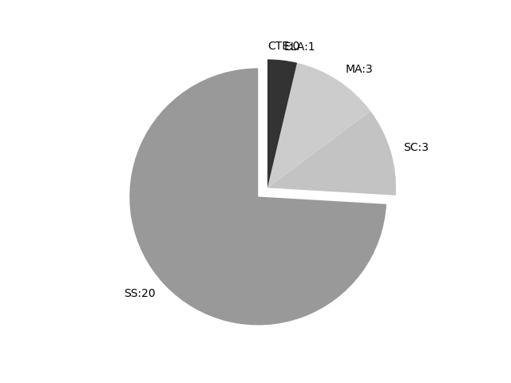

Colorado
Report date: 2021-07-08
The frequency of all keywords found in this state's standards: 27
Comparable state score: 0.998 (median: .303, SD: .324)
The frequency above is the sum of all keywords found in all of this state's four core academic standards and the state's CTE/career standards. This total count is broken down by keyword and discipline area below.
On this site, 'comparable scores' are calculated as: keywords found divided by total words in the standards document(s) - multiplied by 100,000. The comparable scores attempt to normalize data, accounting for very different sizes of curriculum guidance documentation.
Frequencies by keyword or phrase:- spatial: 25
- geospatial: 1
- GIS: 1

Frequencies by discipline area: - SS: 20
(Comp: 4.445) - SC: 3
(Comp: 0.431) - MA: 3
(Comp: 0.402) - ELA: 1
(Comp: 0.173) - CTE: 0
(Comp: 0.0)
External support files:
Examples of keyword use by discipline area (and document): - ELA
- 2020cas-rw-simplified.pdf, page:50, position:1982
heard, wondered). (CCSS: L.3.5c)Acquire and use accurately grade-appropriate conversational, general academic, and domain-speciÞc words and phrases, including those that signal spatial and temporal relationships (for example: Aft
- MA
- 2020cas-ma-simplified.pdf, page:9, position:2104
directions, such as ÒPlease put a mat under each plate.ÓCoherence Connections:This expectation is in addition to the major work of the grade.Between 36Ð60 months, students develop spatial vocabulary and become able to follow - 2020cas-ma-simplified.pdf, page:18, position:96
- 2020cas-ma-simplified.pdf, page:40, position:1638
shares, such as different methods for dividing a square into fourths, to understand that each partition, regardless of shape, represents an equal share of the square. (MP2)Engage in spatial structuring by tiling rectangles with rows a
- SC
- 2020cas-sc-simplified_clean.pdf, page:84, position:2029
Does not include the identiÞcation and naming of minerals.)Construct an explanation based on evidence for how geoscience processes have changed EarthÕs surface at varying time and spatial scales. (MS-ESS2-2) (ClariÞcation Statement: - 2020cas-sc-simplified_clean.pdf, page:86, position:1826
landscape features.GLE Code: SC.MS.3.6Evidence OutcomesStudents Can:Construct an explanation based on evidence for how geoscience processes have changed EarthÕs surface at varying time and spatial scales. (MS-ESS2-2) (ClariÞcation Statement: - 2020cas-sc-simplified_clean.pdf, page:133, position:2007
within EarthÕs crust and mantle.GLE Code: SC.HS.3.5Evidence OutcomesStudents Can:Develop a model to illustrate how EarthÕs internal and surface processes operate at different spatial and temporal scales to form continental and
- SS
- 2020cas-ss-simplified.pdf, page:1, position:107
- 2020cas-ss-simplified.pdf, page:7, position:410
information and present orally.Social StudiesKindergarten, Standard 2. GeographyPrepared Graduates:Apply geographic representations and perspectives to analyze human movement, spatial patterns, systems, and the connections and - 2020cas-ss-simplified.pdf, page:14, position:1796
of the past.Identify self-perspective.Social StudiesFirst Grade, Standard 2. GeographyPrepared Graduates:Apply geographic representations and perspectives to analyze human movement, spatial patterns, systems, and the connections and - 2020cas-ss-simplified.pdf, page:23, position:322
to identify differing perspectives.Social StudiesSecond Grade, Standard 2. GeographyPrepared Graduates:3.Apply geographic representations and perspectives to analyze human movement, spatial patterns, systems, and the connections and - 2020cas-ss-simplified.pdf, page:32, position:2122
through the use of technologies.Social StudiesThird Grade, Standard 2. GeographyPrepared Graduates:3.Apply geographic representations and perspectives to analyze human movement, spatial patterns, systems, and the connections and - 2020cas-ss-simplified.pdf, page:33, position:637
have tried to solve them.Academic Context and ConnectionsColorado Essential Skills:1.Articulate the most effective geographic tools to access information needed for developing spatial thinking. (Professional Skills: Information - 2020cas-ss-simplified.pdf, page:43, position:1800
through the use of technologies.Social StudiesFourth Grade, Standard 2. GeographyPrepared Graduates:3.Apply geographic representations and perspectives to analyze human movement, spatial patterns, systems, and the connections and - 2020cas-ss-simplified.pdf, page:54, position:1728
through the use of technologies.Social StudiesFifth Grade, Standard 2. GeographyPrepared Graduates:3.Apply geographic representations and perspectives to analyze human movement, spatial patterns, systems, and the connections and - 2020cas-ss-simplified.pdf, page:55, position:496
Questions:How can various types of maps and other geographic tools communicate geographic information incorrectly?How do you think differently about data when it is displayed spatially?How and why do we label places?How have p - 2020cas-ss-simplified.pdf, page:64, position:2591
an experiment, or perform a task.Social StudiesSixth Grade, Standard 2. GeographyPrepared Graduates:3.Apply geographic representations and perspectives to analyze human movement, spatial patterns, systems, and the connections and - 2020cas-ss-simplified.pdf, page:65, position:2335
have geographic factors inßuenced human settlement, economic activity, and land acquisition?Nature and Skills of Geography:Spatial thinkers use geographic tools to develop spatial thinking and awareness skills.Spatial thinke - 2020cas-ss-simplified.pdf, page:75, position:143
- 2020cas-ss-simplified.pdf, page:84, position:1691
resources to support learning.Social StudiesEighth Grade, Standard 2. GeographyPrepared Graduates:3.Apply geographic representations and perspectives to analyze human movement, spatial patterns, systems, and the connections and - 2020cas-ss-simplified.pdf, page:85, position:1674
inßuenced human activity?Nature and Skills of Geography:Spatial thinkers use habits of mind which include recognition of concepts of space, interpretation, and analysis of spatial representations.Spatial thinkers apply spati - 2020cas-ss-simplified.pdf, page:95, position:1686
analyze historical, contemporary, and emerging means of changing societies, promoting the common good, and protecting rights.Historical thinkers analyze how historical events and spatial diffusion of ideas, technology, and cultural - 2020cas-ss-simplified.pdf, page:97, position:1244
analyze historical, contemporary, and emerging means of changing societies, promoting the common good, and protecting rights.Historical thinkers analyze how historical events and spatial diffusion of ideas, technology, and cultural - 2020cas-ss-simplified.pdf, page:98, position:509
Can:Analyze variations in spatial patterns of cultural and environmental characteristics at multiple scales while gathering geographic data from a variety of sources. For example: maps, GIS, graphs, charts.Create and interpret maps - 2020cas-ss-simplified.pdf, page:98, position:670
of sources. For example: maps, GIS, graphs, charts.Create and interpret maps to display and explain the spatial patterns of cultural and environmental characteristics using geospatial and related technologies.Evaluate relationsh - 2020cas-ss-simplified.pdf, page:98, position:339
to analyze EarthÕs human systems and physical features to investigate and address geographic issues.GLE Code: SS.HS.2.1Evidence OutcomesStudents Can:Analyze variations in spatial patterns of cultural and environmental chara - 2020cas-ss-simplified.pdf, page:99, position:770
environment.Analyze interpret, and predict the inßuences of migration and the distribution of human population based on reciprocal patterns. For example: historical events, the spatial diffusion of ideas, technologies, and cultur
{kind=link}